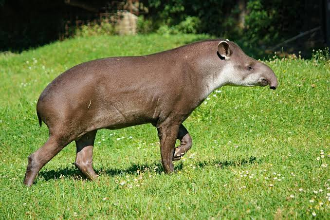
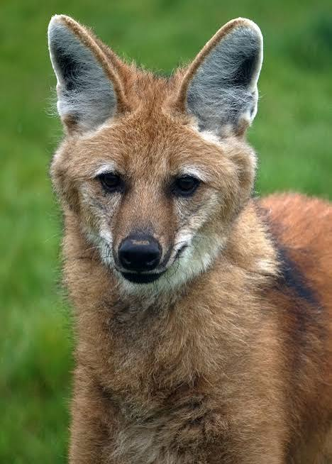
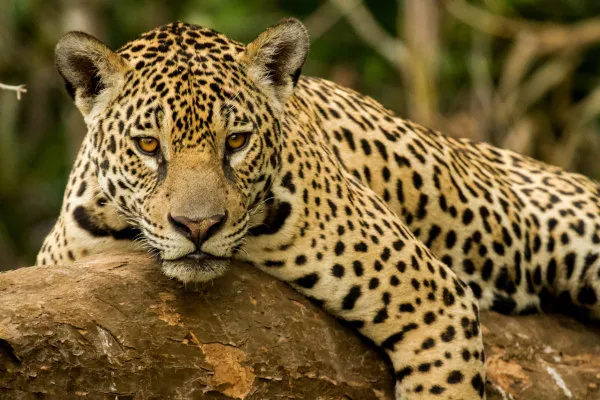

América do SulArara-azul-grande
Maior papagaio do mundo, famosa pelas penas azul-cobalto e por formar casais para a vida toda.
Mamíferos
Conheç algumas das espécies mais fascinantes da fauna latino-americana, com fotos, curiosidades e dados importantes.

América do SulMaior papagaio do mundo, famosa pelas penas azul-cobalto e por formar casais para a vida toda.

Mata e campoFácil de reconhecer pelo enorme bico alaranjado, que usa para regular a temperatura e pegar frutos.

FlorestaUma das maiores aves voadoras do planeta; plana horas pelos Andes alimentando-se de carcaças.
 Selva
Selva
A ave de rapina mais poderosa das Américas, com garras gigantes para caçar macacos e preguiças.
 Cerrado
Cerrado
Ave sagrada dos maias, marcante pela plumagem verde-esmeralda e cauda longa nos machos.
 Floresta
Floresta
Especialista em formigas e cupins.